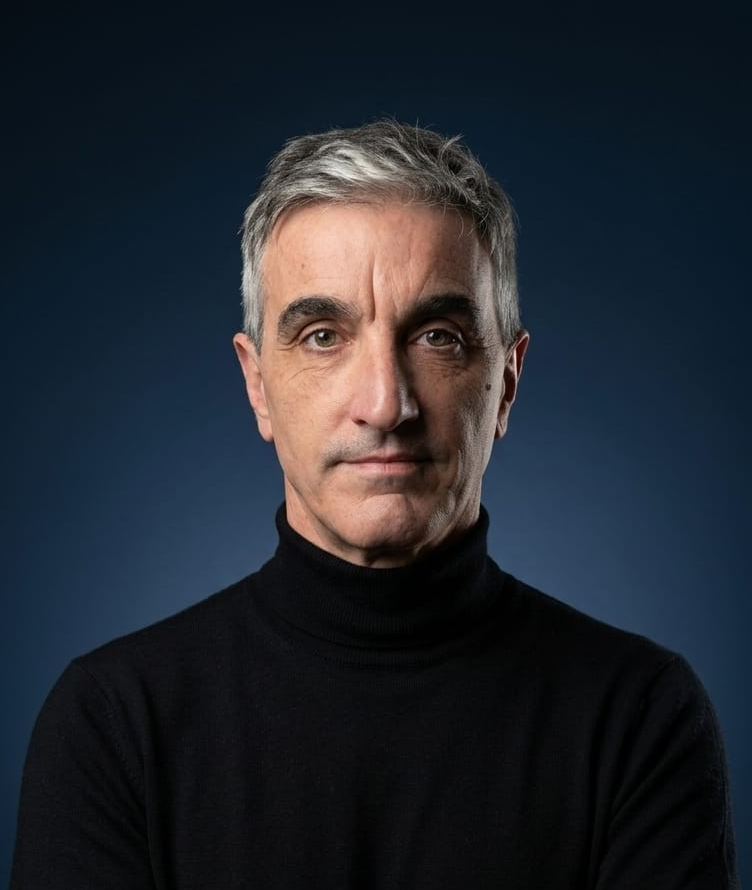
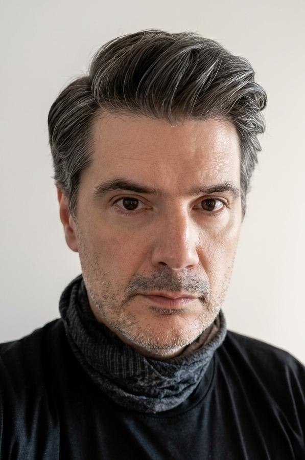

Diseño industrial y formación
El diseño industrial es una herramienta estratégica del sistema productivo nacional, porque permite que la economía se reactive y, en consecuencia, se incorpore mano de obra a la industria, se mejore el valor de las manufacturas y se compita con éxito frente a los bienes importados.
Como diseñador o diseñadora es posible proyectar y representar procesos de fabricación ligados a problemáticas y necesidades vinculadas a la comunidad, la región y el país, desde una óptica novedosa y desprendida de viejos postulados.
Taller de Diseño IV
En la materia Taller de Diseño IV, orientación máduinas y Herramientas y Transporte, de la Licenciatura en Diseño Industrial, se abordan contenidos teóricos y prácticos en relación con el diseño de productos y la factibilidad tecnológica.
Los estudiantes concretan proyectos de diseño Desarrollar un producto de diseño industrial (en este caso un portaminas para grafito de 5.6 mm) integrando las fases del proceso proyectual, mediante un enfoque de tecnología situada, que articule criterios de uso, ergonomía y resolución formal con las condicionantes reales de producción a través de impresión 3D, verificando su viabilidad mediante la materialización de un prototipo funcional.
Trabajo práctico
El presente trabajo práctico propone abordar el diseño de un producto desde una lógica de tecnología situada, entendida como la capacidad de proyectar objetos considerando las condiciones reales de producción, disponibilidad tecnológica y contexto de uso. En este caso, el proyecto se inscribe dentro de un contexto concreto: la carrera de Diseño Industrial dispone de tecnología de impresión 3D, lo que habilita la producción de objetos en pequeña escala dentro del ámbito académico. Se trabajará sobre el diseño de un portaminas para grafito de 5.6 mm, orientado al uso intensivo en actividades proyectuales. El objeto no solo deberá ser diseñado, sino también fabricado y utilizado por los propios estudiantes durante el segundo cuatrimestre, integrándose a las prácticas reales de diseño. De este modo, el ejercicio trasciende la instancia conceptual para convertirse en un producto en uso, donde las decisiones de diseño impactan directamente en la experiencia cotidiana del usuario.
ANÁLISIS
En esta etapa las y los estudiantes deberán:
- Comprender el problema y contexto.
- Analizar tipologías existentes y sistemas de portaminas de grafito grueso.
- Identificar usuarios, situaciones de uso y requerimientos funcionales.
- Reconocer las implicancias del enfoque de tecnología situada en el diseño de producto.
- Definir criterios de diseño coherentes con el contexto de uso y producción.
Integrar condicionantes tecnológicos
- Comprender las características y limitaciones de la impresión 3D (material, resolución, tolerancias y tiempos).
- Incorporar los condicionantes como variables proyectuales desde las primeras etapas.
- Diseñar piezas optimizadas para fabricación aditiva (orientación, ensamblaje, reducción de soportes, etc.).
DESARROLLO
Durante esta etapa las y los estudiantes deberán:
- Generar y explorar alternativas formales y funcionales a nivel macro y micro.
- Tomar decisiones fundamentadas en relación a las especificaciones propias definidas.
- Resolver el objeto en términos de sistema (partes, encastres y funcionamiento).
- Integrar coherentemente forma, función y tecnología.
Resolución funcional y ergonómica
- Diseñar un sistema eficaz de sujeción de la mina de 5.6 mm.
- Resolver la ergonomía del agarre en función del uso prolongado.
- Considerar aspectos de mantenimiento, recarga y durabilidad.
Comunicación del proyecto
- Registrar y comunicar el proceso de diseño de manera clara y ordenada.
- Utilizar recursos gráficos adecuados (croquis, esquemas, renders y planos).
- Expresar decisiones proyectuales con fundamento.
- Presentar el producto de manera coherente y profesional.
MATERIALIZACIÓN
Durante esta etapa las y los estudiantes deberán:
- Traducir el proyecto a un modelo fabricable.
- Preparar archivos adecuados para impresión 3D.
- Ejecutar el prototipo con criterios técnicos correctos.
- Evaluar y ajustar el diseño a partir del objeto producido.
Laboratorio de Diseño LAD
En el Laboratorio de Diseño LAD se busca acompañar y articular con las carreras vinculadas al diseño de la Universidad Nacional de Lanús, mediante espacios que permitan visibilizar actividades de I+D, académicas y de experimentación. En este caso, el LAD desarrolló el espacio de muestra virtual con el objetivo de difundir los resultados del trabajo práctico, junto con los procesos creativos y proyectuales de los estudiantes de la Licenciatura de Diseño Industrial.
Laboratorio de Diseño LAD
Desde el LAD se desarrollan herramientas de planificación, diagnóstico, desarrollo y seguimiento de proyectos y emprendimientos. El espacio promueve la gestión del diseño, articula con empresas, instituciones y equipos interdisciplinarios, y participa en proyectos de investigación, desarrollo e innovación vinculados a diseño, tecnología, producción, accesibilidad y discapacidad.
Equipo docente
El equipo docente articula investigación, práctica proyectual, tecnologías, sustentabilidad y transferencia al medio productivo, acompañando el desarrollo conceptual y material de las propuestas.

DI Pablo López
Diseñador Industrial UNLP 1999, ingreso a carrera docente UNLP 1997 como ayudante alumno en la materia Visión, en la cual me desempeño como Profesor Adjunto Ordinario (08/2021), actualmente cursando el Doctorado en Artes, en FDA - UNLP. Ingreso a la UNLa en 2007, concursando el cargo de Profesor Ordinario de la Asignatura Taller de Diseño Industrial III en 2010, actualmente soy Profesor Adjunto en Taller de Diseño Industrial 4. Entre 2019/2024 me desempeñe como coordinador y docente a cargo de la materia Introductoria al Diseño Industrial, A partir de 2024 curso el profesorado universitario en Diseño Industrial en la U.N.L.P. Hasta 2024 fui tutor de proyectos de diseño para su viabilidad de producción con tecnologías regionales ejecutados en el marco de las TIF y a partir de 04/2024 participo como docente investigador en el proyecto "Desarrollo de simulador Ferroviario" Departamento de Desarrollo Productivo y Tecnológico. Me especializo en el diseño, desarrollo y fabricación de productos específicos para el entrenamiento del hockey sobre césped de alto rendimiento. 2026 - Director de Proyecto.

DI Guillermo Dini
Licenciado en Diseño Industrial, docente adscripto en la cátedra de la materia; Taller de Diseño Industrial 4 del turno vespertino. Actualmente realizo el posgrado; Especialización en Tecnología y fabricación Digital. Investigador de proyectos

DI Federico Enriquez
Técnico en Diseño Industrial 2017. Licenciado en Diseño Industrial 2023. Ayudante Taller 4 Licenciatura de la Carrera de Diseño Industrial. Me desempeño como Diseñador Industrial en lo referido a productos de Extrusión de Aluminio y Diseño de Sistemas de Aberturas y de Fachadas Integrales. Desarrollo de Productos de Extrusión desde el Concepto hasta la Producción. Investigador de Proyectos
Investigación y producción
El equipo desarrolla investigación en el área del diseño, representción e IA, con proyectos vinculados a innovación y uso de la IA.
Docencia y transferencia
La práctica docente se vincula con materias proyectuales y tecnológicas del campo de las máquinas yb herramientas, transportes, tanto en la Universidad Nacional de Lanús como en otros espacios académicos. La experiencia del equipo incluye participación en proyectos de investigación es variada y data desde 2017.